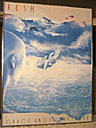
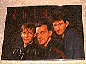
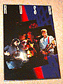
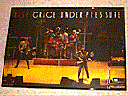
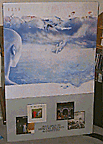
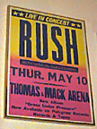
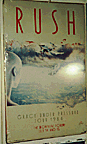

"album cover"
24" x 36"
Close-up picture of the Grace Under Pressure album cover. There are two
versions of this poster -- the US version is printed on normal poster stock,
while the UK version is on thicker paper, has a white border, and the picture
consists of small dots
|

"band portrait"
32" x 22"
Color portrait of the band taken from the Grace Under Pressure album.
|

"three-image concert shot"
24" x 34"
Background split into black, red and blue sections with three concert shots
(one of each member) overlaid. "RUSH" is written at the top in white.
|

"alex & geddy close-up"
24" x 36"
Close-up concert shot of Geddy and Alex. RUSH is in the top left in pink, and
"p/g" in the upper right corner in white.
|

"full-band concert shot"
29" x 20"
Concert shot of the band. RUSH is in the top left in red, "Grace Under
Pressure" across the top in white.
|

"album promo"
24" x 36"
Grace Under Pressure album cover over top 2/3, bottom 1/3 has smaller pictures
of Signals, Moving Pictures, Permanent Waves and Exit... Stage Left with "also
available" written underneath.
|

"thomas & mack tour date"
20" x 24"
Poster for Thomas & Mack Arena (Las Vegas), May 10, 1984. Yellow top fading
to pink with blue writing, with "Live in Concert" at the top, the date and
venue at the bottom.
|

"montreal tour dates"
12" x 20"
Poster for the Montreal Forum, July 14 & 15, 1984. White background with Grace
Under Pressure album cover, RUSH written across the top in red lettering, the
date and venue at the bottom.
|